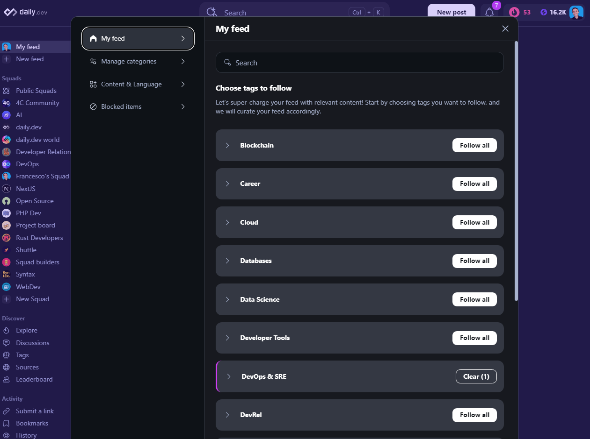
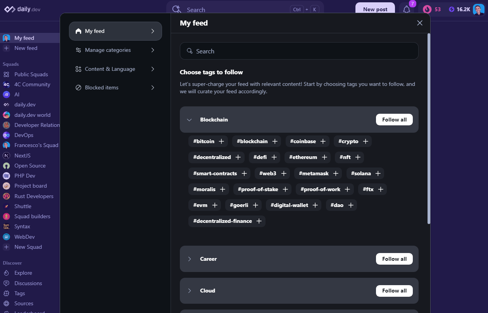
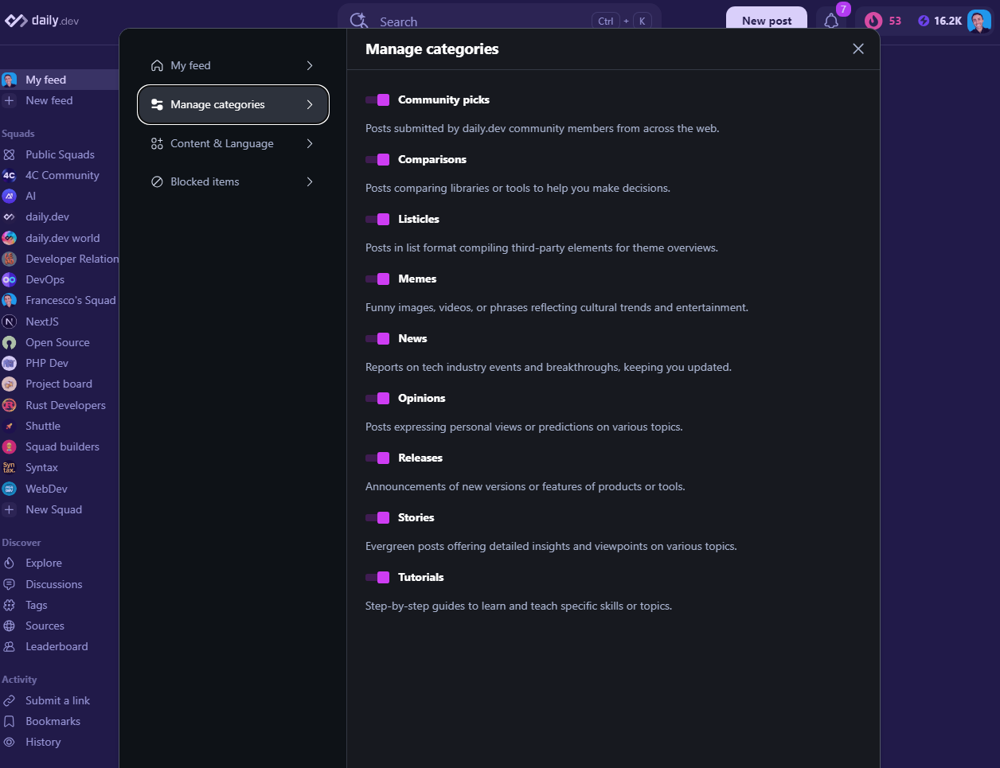

What are the Advanced Filtering Options?
Why settle for basic filtering based on tags when you can have more control over your feed? Sometimes, posts may contain tags you follow, but the content might not be exactly what you're looking for. Configuring your feed based on content categories can help, as these categories are treated separately from the tags you follow.
Configure Your Tags
To configure your tags, click on the "Feed Settings" button to open the feed options menu, as shown below:

You can choose to follow all tags or only specific tags you're interested in. To do this, click on the "Follow all" button to follow all tags or expand the section by clicking the > icon next to the Tag group to follow only the tags you're interested in.

Configure Your Content Categories
Click on the "Feed Settings" button to open the feed options menu:
Choose "Manage Categories" from the feed filters menu, as illustrated below:

Once in the menu, you’ll find several on/off toggle switches that let you fine-tune your feed based on your preferences. These options include:
| Category | Description |
|---|